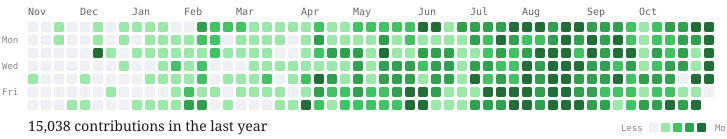

Code
| Project | Description |
|---|---|
|
CONTINUUM Python, MCP, PostgreSQL, Docker |
Production-grade infrastructure for verifiable semantic recovery of long-running autonomous AI agents. Replaces naive replay and token-burning hallucinated recovery with tamper-evident SHA-256 event logs, an idempotent action ledger preventing duplicate side effects, semantic checkpoints, and a deny-by-default 13-tool MCP server. 4,230+ tests, 58 contributors, 14 Phase 6 recovery scenarios. [GitHub / Live Demo / PyPI / Docker / Technical Story] |
|
SNAGLINE Python, Zero-Dependency, HTTP |
Zero-dependency, microsecond-scale real-time failure detection and guardrails for LLM agents. Catches infinite loops, tool thrashing, statistical latency drift, and reasoning collapse in real time with 1.70 - 2.43 µs median latency and zero LLM-as-a-judge overhead. 11 contributors, 13 stars. [GitHub / Documentation / PyPI] |
|
snapjudge C++17, Zero-GPU, System-1 |
Fast, non-autoregressive System-1 decision engine in pure C++17. Evaluates typed questions (choice, score, noun) with calibrated probabilities in a single forward pass, delivering sub-millisecond execution with zero GPU dependencies. [GitHub] |
|
QwerySmith PyTorch, QLoRA, GGUF, Unsloth |
Production Text-to-SQL research pipeline and self-healing autonomous database agent (Qwen3-4B base + QLoRA). Solves single-source overfitting via balanced multi-source curriculum, achieving 88.5% in-distribution and 55.7% enterprise accuracy. Released with QwerySmith 2.0 multi-seed development models (Seeds 1, 2, 3), 1.1 adapters and merged weights, and offline 4-bit GGUF quantization for local private execution. [GitHub / Paper (PDF) / Hugging Face] |
|
maya-healthcare-llm PyTorch, Domain LLM, Healthcare |
Research-grade sovereign healthcare operations LLM. Reproducible fine-tuning and evaluation suite specializing in non-clinical hospital administration, bed occupancy forecasting, workforce rostering, and operating room logistics, engineered for strictly local on-premises hospital deployment with zero cloud data egress. [GitHub] |
|
wave-coAtNet PyTorch, 2D DWT, Self-Attention |
Hybrid Wavelet-Attention deep learning architecture combining 2D Discrete Wavelet Transforms, MBConv convolution blocks, and Relative Self-Attention for rare dermatological disease diagnosis. [GitHub] |
|
kibo-v7- TypeScript, React 18, PostgreSQL |
Career orchestration platform with PostgreSQL, Supabase Realtime sub-100ms CDC, TanStack Query, and interactive analytics. [GitHub] |
Activity
Contributions and commit activity across open-source and private repositories (@Cyrax321), including public and private repository commits, pull requests, and code reviews.

Open-source contributions
Core contributor to tensorflow/tensorflow with 24 pull requests (22 merged, 2 approved). Rather than cosmetic patches, my work focused on root-causing silent compiler crashes in XLA, unsound algebraic rewrites in Grappler, and numerical stability in automatic differentiation.
| Subsystem | Technical Focus & Root-Cause Fixes |
|---|---|
|
Grappler & Optimizer C++, Graph Rewrites |
Excluded tf.Reciprocal from unsound involution simplification where 1/(1/x) → x violated IEEE 754 float rules on subnormals and overflows (#123195, #123282). Corrected unsound ArgMax/ArgMin graph rewrites on saturated float32 boundaries (#122826).
→ Read the technical story in my blog → |
|
XLA Compiler C++, Shape Lowering |
Resolved fatal segmentation fault during XLA shape lowering in TensorArray.unstack and TensorArrayScatterOp caused by unchecked RemoveDim(0) calls on rank-0 scalar tensors (#124930, #124929). Fixed compilation failure in tf.experimental.numpy.cross with static trailing dimensions (#124588) and negative permutation index validation in tf.transpose (#124586).
→ Read the technical story in my blog → |
|
Core Math & Gradients C++, Eigen, Python |
Safeguarded tf.linalg.det backward pass to prevent gradient explosion and NaN contamination on singular matrices (#122823). Fixed tf.math.floordiv returning incorrect results for negative infinity divisors (#123862), added numerical Jacobian gradient tests for tf.math.igamma (#123803), and prevented +inf accumulators from triggering NaN cascades in tf.math.cumulative_logsumexp (#115554).
→ Read the technical story in my blog → |
|
Runtime & Typing Python, C API |
Fixed dynamic TypeError in tf.nn.weighted_moments when axes are passed as Tensor instances (#122402), ensured PosixPath compatibility in runtime imports (#115551), and standardized specific exception typing across tensorflow/python and tensorflow/tools (#117860, #117895).
→ Read lessons and takeaways in my blog → |
View complete list of 24 pull requests to tensorflow/tensorflow
| PR | Title | Subsystem | Status |
|---|---|---|---|
| #124930 | Reject scalar values in XLA TensorArrayScatterOp before RemoveDim(0) | XLA | Merged |
| #124929 | Fix XLA TensorArray.unstack segfault on scalar input | XLA | Merged |
| #124927 | Fix tf.math.igamma to return NaN for out-of-domain inputs (a ≤ 0, x == 0) | Core Math | Merged |
| #124588 | Fix XLA compile failure in tf.experimental.numpy.cross with static last dimension | XLA | Merged |
| #124586 | Fix tf.transpose rejecting negative perm indices under XLA compilation | XLA | Merged |
| #124450 | Fix documentation typos in Python docstrings and comments | Docs | Merged |
| #124407 | Fix OverridableFetchContent override example to use prefixed variable name | Build | Merged |
| #124233 | Validate resource variable dtypes in training ops | Core | Approved |
| #123862 | Fix tf.math.floordiv wrong result for -inf divisors | Core Math | Open |
| #123803 | Add numerical Jacobian test for igamma x-gradient | Gradients | Merged |
| #123282 | Remove incorrect TF_Involution trait from tf.Reciprocal | MLIR | Merged |
| #123195 | Exclude Reciprocal from Grappler involution simplification | Grappler | Merged |
| #122826 | Fix Grappler ArgMax/ArgMin wrong results for saturating ops in float32 | Grappler | Merged |
| #122823 | Fix tf.linalg.det gradient crash on singular matrices | Gradients | Merged (internal) |
| #122402 | Fix TypeError in tf.nn.weighted_moments when axes is a tf.Tensor | NN Ops | Merged |
| #117895 | Replace generic Exception with specific types in tensorflow/tools | Tools | Merged |
| #117894 | Use idiomatic Python patterns in speech_commands examples | Examples | Merged |
| #117860 | Replace generic Exception with specific exception types in tensorflow/python | Python API | Merged |
| #117858 | Replace generic Exception with specific exception types in speech_commands | Examples | Merged |
| #115560 | Docs: Fix miscellaneous spelling typos across codebase | Docs | Merged |
| #115554 | Fix tf.math.cumulative_logsumexp NaN for +inf inputs | Core Math | Merged |
| #115551 | Fix TypeError when sys.path contains PosixPath objects | Runtime | Merged |
Technical skills
| Languages | Python, C, C++, Java, SQL, Shell |
| AI / ML | PyTorch, TensorFlow, Keras, Hugging Face, OpenCV, LangChain, LangGraph |
| Tools | Git, GitHub Actions, Docker, PostgreSQL, SQLite, Linux |